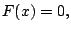
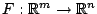
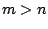

Extending Newton's method to solving  where  is continuously differentiable and , requires solving an underdetermined linear system for the Newton step at each iteration. When the step is the pseudo-inverse solution, the resulting method is sometimes called the normal flow method. Like Newton's method, it usually is easy to implement, has a simple and useful local convergence theory and, in its pure form, is not well suited for solving large-scale problems. In this talk I will present variations of the normal flow method analogous to inexact Newton methods and globalized inexact Newton methods. These methods have been developed to improve the robustness and efficiency of the normal flow method on large-scale problems. Preliminary computational results on some simple problems will be presented. This work was done in collaboration with my advisor Homer Walker at Worcester Polytechnic Institute.